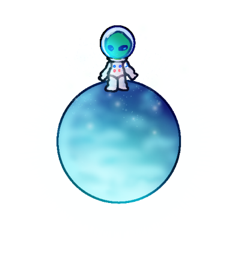

Tervetuloa avaruuspeleihin! Tämä verkkosivusto on kuuden opiskelijan toteutus kurssilta Web-projekti keväällä 2025. Pääset pelaamaan hauskoja avaruusaiheisia pelejä ja voit samalla saada tietoa avaruudesta.
Aurinkokunnan muodostavat aurinko, planeetat ja kuut. Aurinko on tähti. Aurinkokunnassamme on kahdeksan planeettaa, jotka kiertävät aurinkoa: Merkurius, Venus, Maa, Mars, Jupiter, Saturnus, Uranus ja Neptunus. Aiemmin myös Pluto kuului planeetoihin, mutta se poistettiin planeetoista vuonna 2006. Myös mm. asteroidit, meteoroidit ja komeetat kiertävät aurinkoa. Planeettaa kiertää kuu ja joillakin isommilla planeetoilla voi olla useampia kuita. Maalla on yksi kuu.
